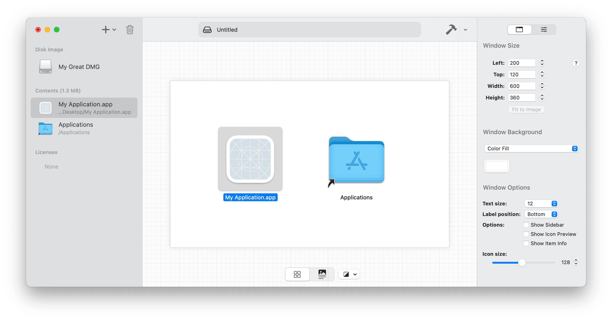
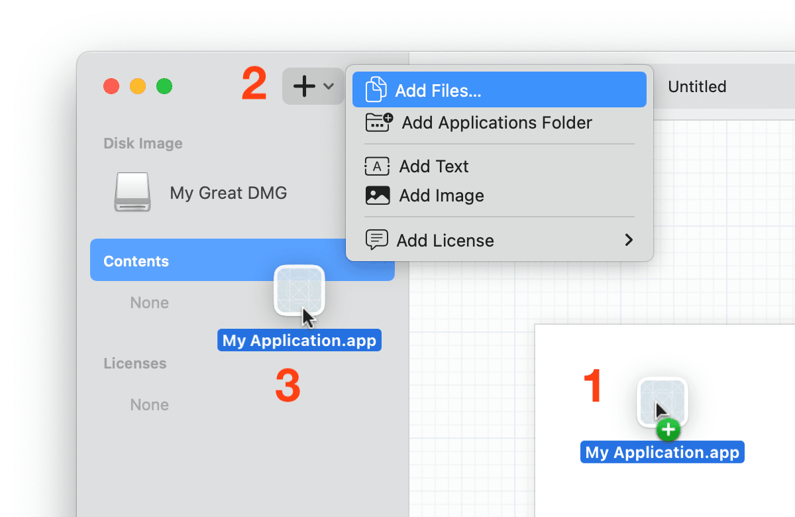

Adding Files
Disk File Contents
The Contents view shows the preview of what the Finder window will look like when the disk image is mounted. The window size, location, file icon sizes, and various other settings are specified using the sidebar on the right side of the window.

Adding files to a disk image is extremely simple using DMG Canvas, and you have multiple ways to do it.
- Simply drag and drop the files into the Contents view to have DMG Canvas copy those files to the disk image when the disk image is built.
- Use the Add menu in the toolbar
- Drag the item into the Contents section of the sidebar.
To create an alias to a file or folder, simply hold Control while dropping the file into the view.

Building Disk Images
When you add files to the document in DMG Canvas, instead of the files being copied into the document, both absolute and relative file paths to the files stored. (Relative paths use the document’s parent folder as the root location.) This way, when you build a disk image using either DMG Canvas.app or the dmgcanvas command line tool, the latest versions of the files referenced are used.
When DMG Canvas looks for a file to copy into the disk image being built, it first uses the relative path to find the file. If a file does not exist at the location, it looks for it at the absolute path. By taking advantage of relative paths, you can use one set of files to create the DMG Canvas document, and move the document to another location or even another machine and use an entirely different set of files to create the disk image. As long as the relative location between the files and the document are the same, it’ll work seamlessly.